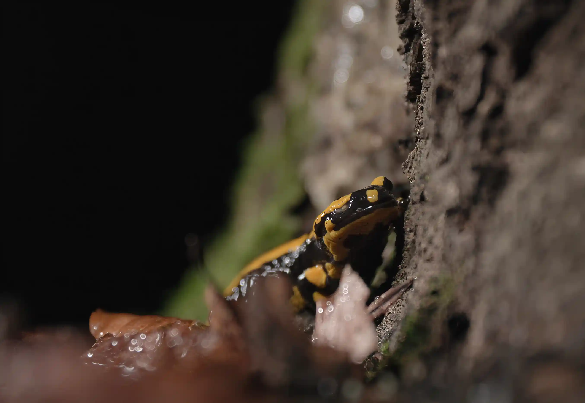

Nachdem es in den letzten Nächten bei uns in Nordhessen zum ersten Mal in diesem Herbst kälter geworden ist, konnten wir heute und gestern Abend erstmals Feuersalamander auf dem Weg in ihr Winterquartier beobachten und filmen.
Dabei ist uns auch dieser einäugige Salamander begegnet.